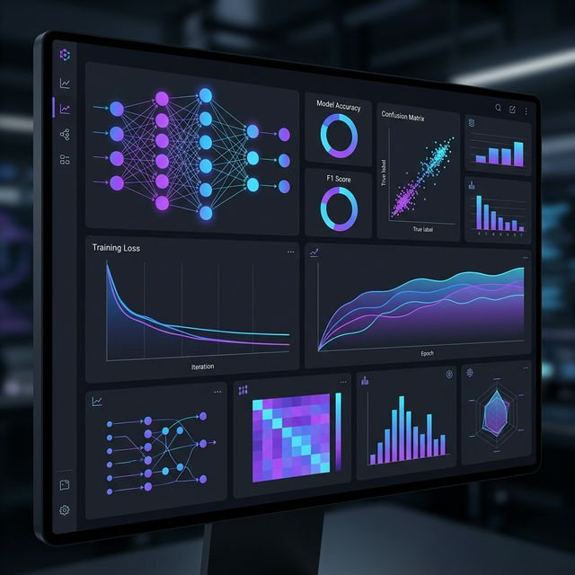
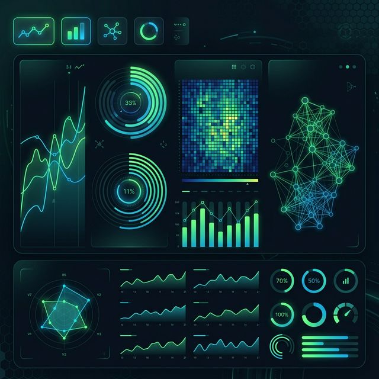
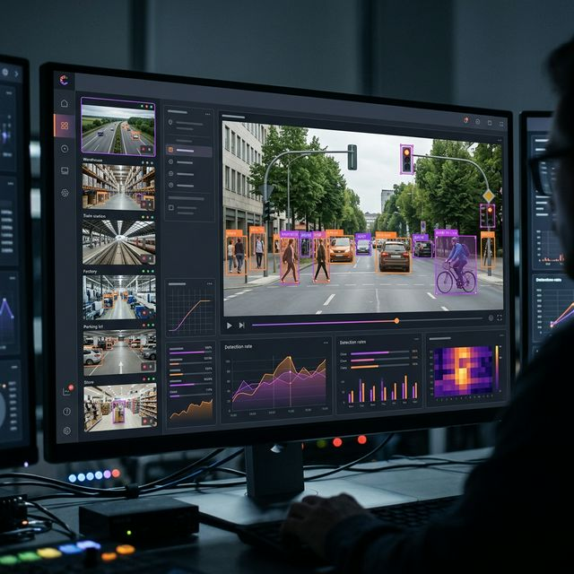

Motivated B.Tech Computer Science student with a strong foundation in programming, databases, and problem-solving. Experienced in developing academic projects using Python, Java, SQL, and web technologies. Passionate about applying technical knowledge to real-world challenges and learning emerging technologies like Machine Learning and Data Analytics. Seeking opportunities to gain hands-on experience and contribute effectively to innovative teams.
A passionate learner on a mission to solve real-world problems with technology.
I am Vellanki Harshitha, a motivated B.Tech Computer Science student at Kalasalingam Academy of Research and Education, Tamil Nadu. With a strong academic record (CGPA: 8.6/10), I have built a solid foundation in programming, databases, and analytical problem-solving.
I am experienced in developing academic projects using Python, Java, SQL, and web technologies like HTML, CSS, and JavaScript. My passion lies in applying technical knowledge to real-world challenges — from building Machine Learning models for cybersecurity to creating IoT-based smart systems for everyday life improvements. I am always eager to learn emerging technologies and collaborate with innovative teams.
The languages, tools, and technologies I work with to build robust and scalable solutions.
My academic journey that built a strong foundation in Computer Science and analytical problem-solving.
Kalasalingam Academy of Research and Education, Tamil Nadu
Currently pursuing B.Tech with a CGPA of 8.6/10. Engaged in coursework covering Data Structures, Algorithms, Object-Oriented Programming, Database Management Systems, Machine Learning, and Web Technologies. Actively participating in coding competitions, technical symposiums, and hands-on project development using Python, Java, SQL, and modern web frameworks. Building a strong portfolio through academic projects in cybersecurity, IoT, and data management.
Viswabharathi Junior College
Scored an outstanding 949 out of 1000 marks, demonstrating exceptional academic excellence and dedication. Developed strong analytical and mathematical reasoning skills that form the backbone of my problem-solving abilities in computer science. Active participant in science exhibitions and mathematics olympiads, consistently ranking among top performers.
Nagarjuna High School
Achieved a perfect score of 600 out of 600 — a testament to unwavering commitment, discipline, and academic excellence. This milestone sparked a deep interest in science and technology, setting the foundation for a career in Computer Science. Recognized as school topper and received accolades for outstanding performance across all subjects.
My professional experience and leadership roles that have shaped my skills and growth.
Infosys Springboard
AI-Driven Resume Analyzer & Job Recommendation System
Developed an AI-powered resume analysis system to evaluate resumes, identify skill gaps, and generate resume scores.
Built a personalized job recommendation module based on candidates' skills, experience, location, salary expectations, and job preferences.
Integrated job-search functionality to help users discover relevant opportunities based on their profiles.
Applied Python and machine learning concepts to automate resume analysis and improve the job-matching process.
KARE OSS
Promoted from Event Management Lead to Co-Secretary based on active contribution and leadership. Organized and coordinated 9+ technical and community events, managing planning, execution, and team coordination. Worked with student teams to conduct technical sessions, workshops, and open-source activities. Coordinated responsibilities across team members and ensured smooth execution of events from planning to completion. Developed leadership, communication, teamwork, event management, and organizational skills through active involvement in the society.
Explore my academic and personal projects showcasing problem-solving with Python, ML, SQL, and IoT.

Machine Learning • NLP
Developed an AI-powered resume analysis system to evaluate resumes, identify skill gaps, and generate resume scores. Built a personalized job recommendation module based on candidates' skills, experience, location, salary expectations, and job preferences. Integrated job-search functionality to help users discover relevant opportunities based on their profiles. Applied Python and machine learning concepts to automate resume analysis and improve the job-matching process. Completed during Infosys Springboard AI/ML Internship.

Machine Learning • AI
Developed an innovative AI-powered system to analyze and predict the uniqueness of project ideas. The system evaluates project proposals against existing databases to identify originality and innovation potential. Utilized natural language processing to extract key features from project descriptions and compare them with similar projects. Implemented machine learning algorithms to score projects based on novelty, feasibility, and market potential. Helps researchers and developers identify truly innovative project ideas and avoid duplication of efforts.

NLP • Machine Learning
Developed an intelligent complaint severity detection system using Natural Language Processing and machine learning. The system automatically analyzes customer complaints and categorizes them by severity levels to prioritize response actions. Implemented text preprocessing, sentiment analysis, and feature extraction techniques to understand complaint context and urgency. Used classification algorithms to accurately predict severity scores based on complaint content, language patterns, and key indicators. Helps organizations improve customer service by ensuring critical issues are addressed promptly and efficiently.
Have a project idea or want to collaborate? I'd love to hear from you. Let's build something amazing together!
Phone
Location
Tamil Nadu, India